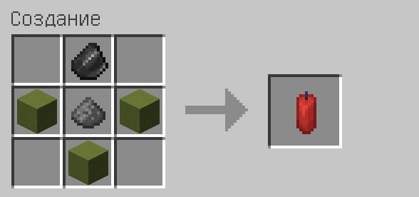
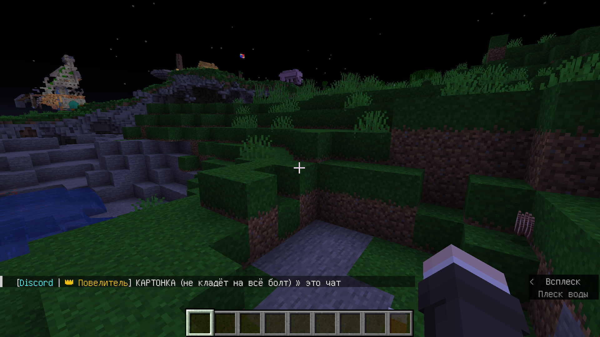

Краткая вики
Тут вы можете узнать всю необходимую информацию о различных механиках сервера.
Гранаты
На нашем сервере Вы можете найти различную пиротехнику, которую можно создать на верстаке!
Пример рецепта
Еда
Также у нас есть плагин на еду. Мы добавили большое количество кастомных блюд и рецепты к ним!
Пример рецепта

Напитки
У нас установлен плагин brewery. Но не как на большинстве серверов, а ещё и со своими рецептами. В этой статье Вы сможете найти их!
Варильня

Моды
Здесь можно найти список желательных модов!
Пример эмоции
Миры
У нас есть мир выживания и мир ферм. Узнайте больше о них в статье!
Один из миров
Донат
У нас также есть косметический донат, который не вияет на игровой процесс, а добавляет множество косметики. Подробнее в статье!
Косметика на игроке
Логи и откаты
Если у Вас что-то украли, то Вы сможете узнать кто это сделал через команду и пожаловаться на него!
Команда в чате
gsit
Ещё у нас установлен плагин gsit. При помощи него можно садиться на других игроков и не только!
Игрок сидит
Приручение лис
На сервере стоит плагин для приручения лис, прочтите статью, чтобы узнать как!
Прирученная лиса
DiscordSRV
Также Вы можете переписываться с другими игроками, которые прямо сейчас играют через дискорд!
Чат
Метки на инструментах
И наконец, у нас есть плагин на метки на инструментах, чтобы всегда знать статистику. Кирка с 50000 сломанными блоками всегда лучше, чем без статистики!